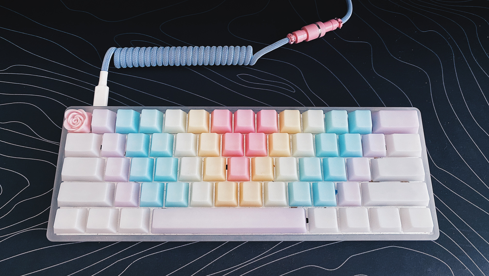

hana.ninja 🥷 / keyboards
I got really into building custom mechanical keyboards during the pandemic. It is just so satisfying to build and design a custom keyboard that meets my specific needs. Feel free to reach out to me on social media if you are a fellow mech keeb fan and/or if you are looking to get started in the hobby and have any questions!
Ergo
My first non-standard keyboard! I was really worried about learning how to type on an ortholinear layout (and there was absolutely a learning curve), but I've surprised myself with how quickly I was able to adapt to this keyboard. The keyboard's split design and ortholinear key layout is meant to promote a healthier, ergonomic posture. And it also means I now have room to place snacks squarely in front of me, in between the two halves.
Stats
- Ergodox EZ in White
- Kailh Polia Tactile Switches (Lubed with Krytox 205g0)
- YMDK Sunset Gradient Keycaps (Cherry Profile)
 Ergodox EZ with YMDK Sunset Gradient Keycaps
Ergodox EZ with YMDK Sunset Gradient Keycaps
 Under the hood are matching Kailh Polia Switches.
Under the hood are matching Kailh Polia Switches.
TKL (80%)
My go-to keyboard for design. TKL/80% keyboards give me the greatest access to the keys I need when I'm working. I have selected linear switches and keycaps that display alphas to help expedite my workflow. And if I need to build in macros/shortcuts to speed up certain actions to help me as I design, I have an ample amount of keys to choose from when programming those actions!
Stats
- Drop CTRL Keyboard with High Profile Lilac Aluminum Case
- Novelkey Cream Linear Switches (Lubed with Krytox 205g0)
- Milkshake and Astrolokey Keycaps
Drop CTRL with (almost) Milkshake Keycaps. The real ones sold out!
 Drop CTRL with Astrolokey Keycaps.
Drop CTRL with Astrolokey Keycaps.
 Lilac coiled cable with pink aviator. Custom cable by Cookie Cable.
Lilac coiled cable with pink aviator. Custom cable by Cookie Cable.
60%
I use this keyboard when I know I will have to type extensively! So basically whenever I need to write tickets or type a little bit up of code. This keyboard is much more compact and fits my setup a lot nicer. And the POM Jelly Keycaps feel really nice to touch and type with. This keyboard also uses tactile switches, so the feedback I get when pressing down on a key feels satisfying.
Stats
- Drop Carina
- Drop Halo Tactile Switches (Lubed with Krytox 205g0)
- POM Jelly Keycaps
Drop Carina with POM Jelly Keycaps.
20% (Numpad)
Sometimes I need to input numbers in quickly while I'm designing, but my small desk means it's inconvenient for me to have a full 100% keyboard with a numberpad attached. That's where my handy little bluetooth 20% numpad comes in!
Stats
- GK21s Bluetooth Numpad with Purple Case
- Kailh Pro Purple Tactile Switches
- Astrolokey Keycaps
- Artisan Keycaps from PuggyCrafts @ Etsy
 GK21s Numpad with purple case using Astrolokey keycaps.
GK21s Numpad with purple case using Astrolokey keycaps.
Logitech Pebble
Just for fun! My iPad needed a bluetooth keyboard and I don't do any rigorous typing on my iPad. But it's still important to keep things cute, even for casual typing.